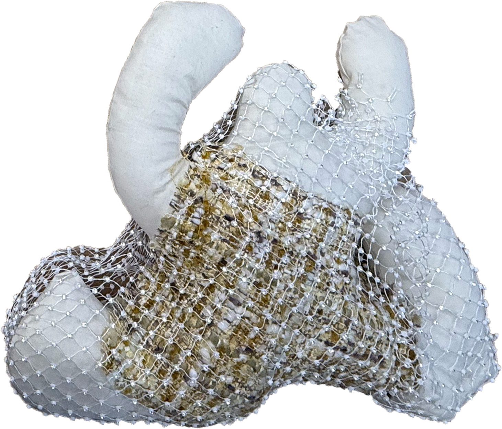
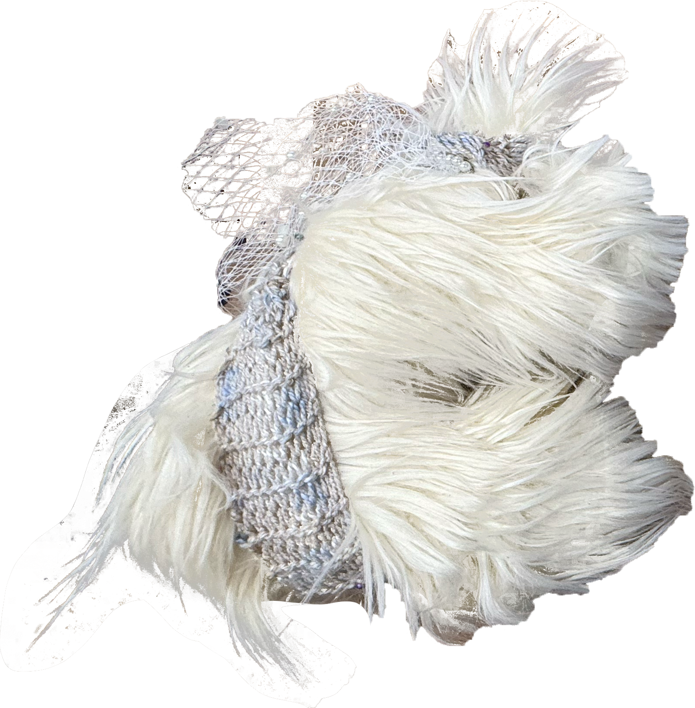
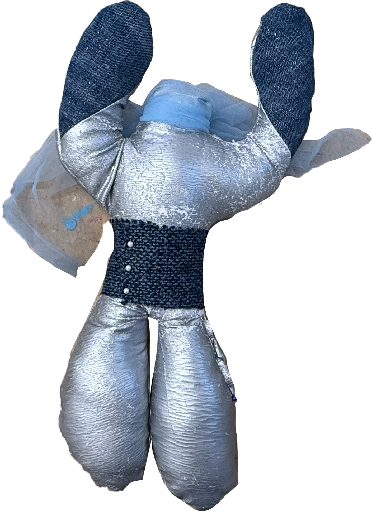
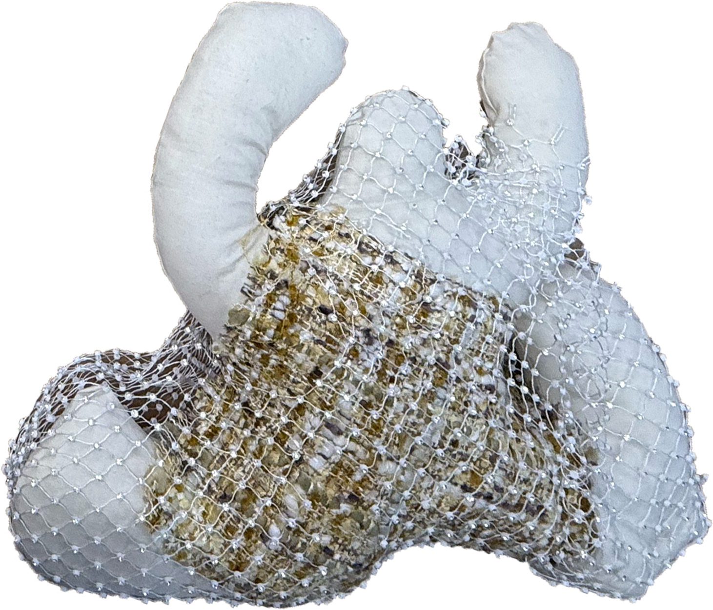
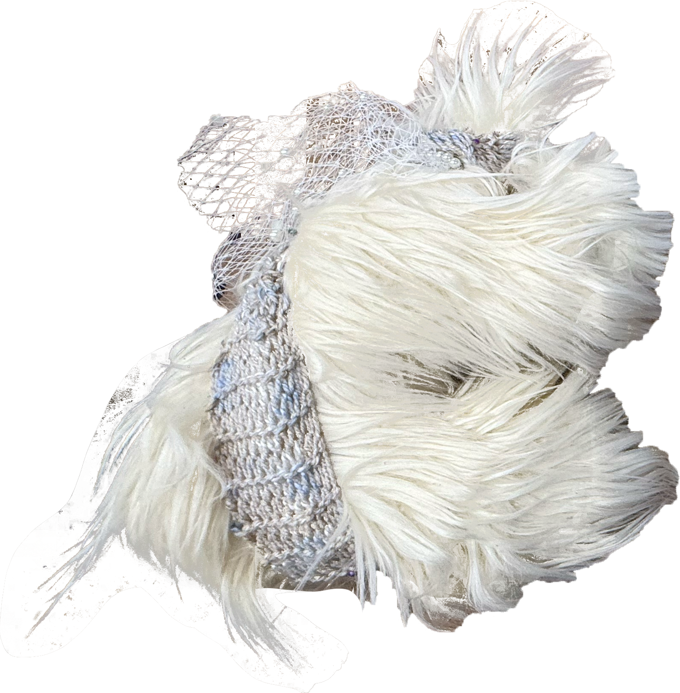
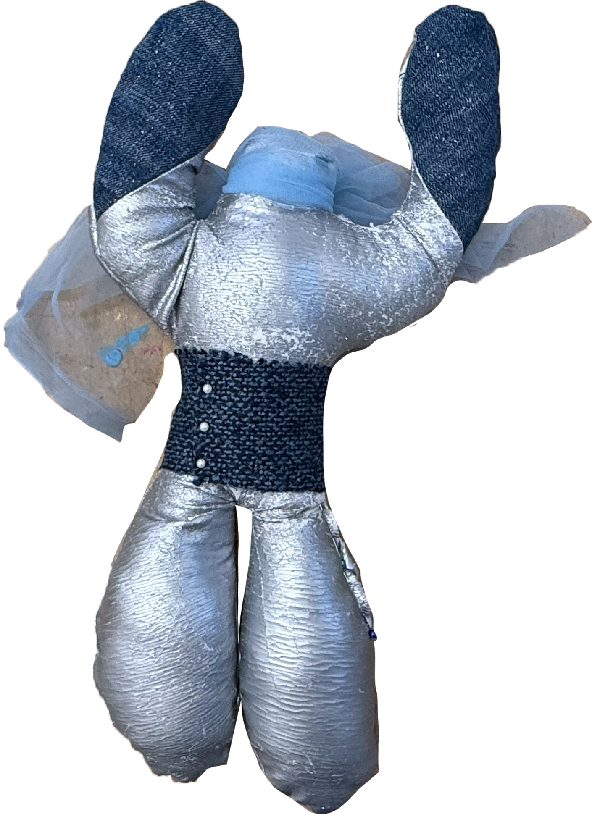

An interactive audiovisual installation inspired by dreams.
These three plushies are made from found textiles and embedded with sensors.
You are invited to pull, stretch, and play with them.
Your touch is transformed into sound and visuals in real-time, creating a collaborative symphony with fellow audience members.
Medium: Reclaimed textiles, force sensors, stretch sensors, p5.js, sound, projection.
Exhibited: NYU IMA Summer Show, August 13, 2025.
 




